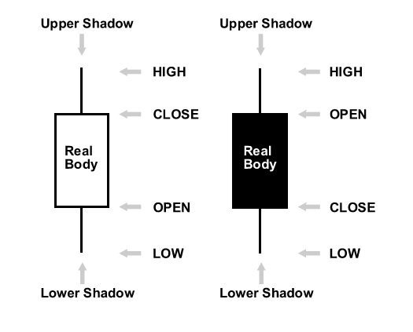
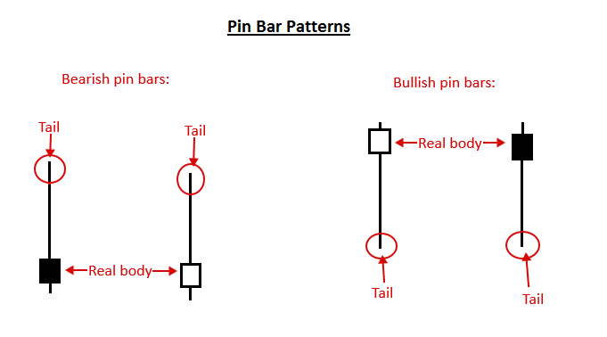
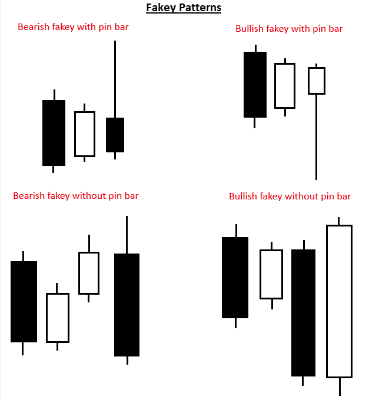
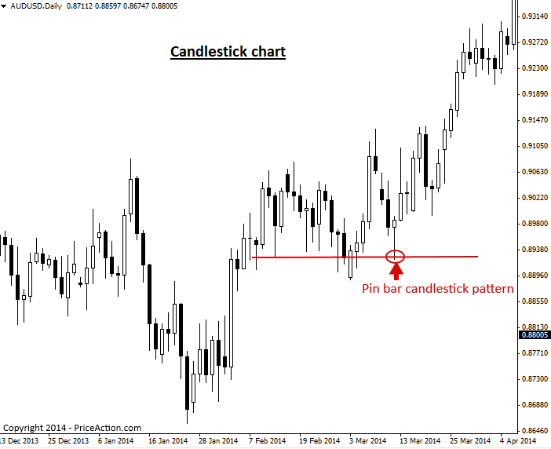

Introduction to Japanese Candlestick Patterns
일본식 캔들스틱 패턴이란 무엇인가요?
캔들 스틱은 특정 기간 동안 시장의 시가, 고가, 저가, 종가를 보여줍니다. 예를 들어 일간 차트를 살펴보면, 각 캔들스틱은 해당 기간 동안의 가격 움직임 에 대한 시가, 고가, 저가, 종가를 반영합니다 .
캔들스틱과 표준 가격 막대의 주요 차이점은 캔들스틱은 캔들의 시가와 종가 사이에 색깔이 있는 부분을 표시한다는 것입니다. 이를 통해 트레이더는 당일 가격이 상승(상승)했는지 하락(하락)했는지 빠르게 파악할 수 있으며, 이는 가격 변동을 이용하는 모든 트레이더에게 중요한 정보입니다.
이를 더 명확하게 알아보기 위해 상승 및 하락 촛대 그림을 살펴보겠습니다.
참고: 왼쪽 캔들은 종가가 시가보다 높기 때문에 '상승 캔들'입니다. 오른쪽 캔들은 종가가 시가보다 낮기 때문에 '하락 캔들'입니다.

캔들스틱의 색깔이 있는 부분을 "실체(real body)" 또는 본체라고 합니다. 참고: 실체 색상은 트레이더마다 다를 수 있으며, 색상 설정 방식이나 개인적 선호도에 따라 달라집니다. 실체 색상 구성은 강세일 경우 흰색, 약세일 경우 검은색이며, 저희는 이 색상 구성이 가장 깔끔하고 최적의 선택이라고 생각합니다.
몸통 위아래로 튀어나온 얇은 선들은 높낮이를 나타내며, 그림자, 꼬리, 심지 등으로 불립니다. 세 가지 이름 모두 같은 것을 지칭합니다. 위쪽 그림자의 윗부분은 "높음"이고, 아래쪽 그림자의 아랫부분은 "낮음"입니다.
캔들스틱 패턴이란 무엇인가요?
캔들스틱 패턴은 캔들스틱 차트에 그래픽으로 표시되는 하나 또는 여러 개의 막대로 구성된 가격 변동 패턴으로, 가격 변동 트레이더들이 시장 움직임을 예측하는 데 사용합니다. 패턴의 식별은 다소 주관적이기 때문에, 경험이 풍부하고 전문적인 가격 변동 트레이더의 훈련과 더불어 직접 화면을 보면서 캔들스틱 패턴을 식별하고 거래하는 기술을 익혀야 합니다.
캔들스틱 패턴은 매우 다양하며, 대부분은 동일한 기본 원리에 약간의 변형을 준 것일 뿐입니다. 따라서 priceaction.com에서는 30가지의 다양한 패턴을 배우려고 애쓰는 것보다, 트레이더에게 유용한 매매 신호를 제공하는 소수의 검증된 캔들스틱 패턴에 집중하는 것이 더 합리적이라고 생각합니다. 30가지 패턴 중 상당수는 본질적으로 동일한 패턴을 사용합니다.
다음은 우리가 가장 선호하는 캔들스틱 가격 액션 거래 전략 중 일부입니다.
핀 바 캔들스틱 패턴 – 핀 바 캔들스틱 패턴은 특정 가격 수준이나 영역을 거부하는 단일 봉 패턴입니다. 이 패턴은 작은 몸통과 한쪽에만 긴 그림자 또는 '꼬리'를 가지며, 이는 해당 가격 영역의 거부를 나타냅니다. 핀 바는 추세 내에서 또는 추세에 반하는 반전 신호 로 거래될 수 있습니다 . 핀 바의 모양은 다음과 같습니다.

인사이드 바 캔들스틱 패턴 - 인사이드 바 캔들스틱 패턴 은 최소 두 개의 봉으로 구성된 패턴(여러 개의 인사이드 바를 포함할 수 있음)으로, 시장에서 우유부단하거나 정체된 모습을 보입니다. 인사이드 바 트레이딩 전략은 으로 가장 효과적이지만 일반적으로 추세 시장에서 가격 변동 돌파 전략 , 주요 차트 수준에서 반전 전략으로도 활용될 수 있습니다. 인사이드 바의 예시는 다음과 같습니다.

가짜 캔들스틱 패턴 – 가짜 캔들스틱 패턴 은 일반적으로 3개 또는 4개의 봉으로 구성된 패턴으로, 내부 봉 패턴의 허위 돌파를 나타냅니다. 가짜 패턴은 시장에서 '가짜 돌파'가 발생했으며, 이후 가격이 허위 돌파의 예를 살펴보겠습니다 아래에서 가짜 패턴 반대 방향으로 계속 상승할 가능성이 높음을 나타냅니다.

캔들스틱 차트란 무엇인가요?
캔들스틱 차트는 막대형 차트의 표준 가격 막대나 선형 차트의 선 대신 캔들스틱으로 채워진 가격 차트입니다.
각 촛대는 해당 기간의 최고가, 최저가, 시가, 종가를 보여줍니다. 이는 전통적인 가격 막대에 반영되는 정보와 동일하지만, 촛대는 이러한 정보를 훨씬 더 쉽게 시각화하고 활용할 수 있게 해줍니다.
전형적인 캔들스틱 차트의 예시입니다. 이 차트에서 지지선에서 형성된 핀바 캔들스틱 패턴 과 그에 따른 큰 상승세에 주목하세요…

캔들스틱 차트의 장점
캔들스틱 가격 움직임 차트의 주요 장점은 일반적인 막대 차트나 선형 차트보다 시간 경과에 따른 가격 움직임을 더욱 강렬하고 '극적인' 시각적으로 보여준다는 것입니다. 각 캔들의 몸통은 상승 또는 하락 마감 시점에 따라 색상이 지정되어 있기 때문에 가격 막대 간의 움직임을 훨씬 더 쉽게 파악할 수 있으며, 많은 트레이더들은 이것이 더 '재미있다'고 주장합니다.
궁극적으로 트레이더가 표준 막대 차트를 사용하든 캔들 차트를 사용하든 개인의 취향과 의견에 따라 달라집니다. 하지만 저와 대부분의 성공적인 가격 움직임 트레이더들은 시장 심리를 더 잘 파악하고 가격 움직임 거래 신호를 더 쉽게 포착하기 위해 캔들 차트를 사용해야 한다고 생각합니다.
https://priceaction.com/price-action-university/beginners/candlesticks/